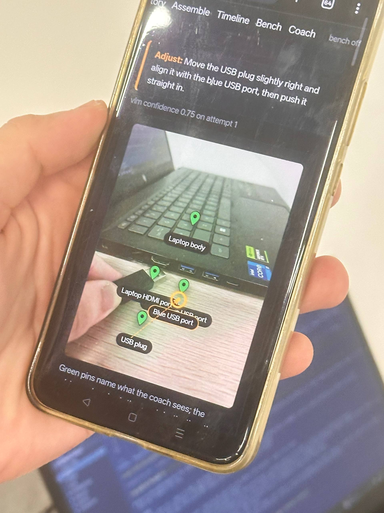
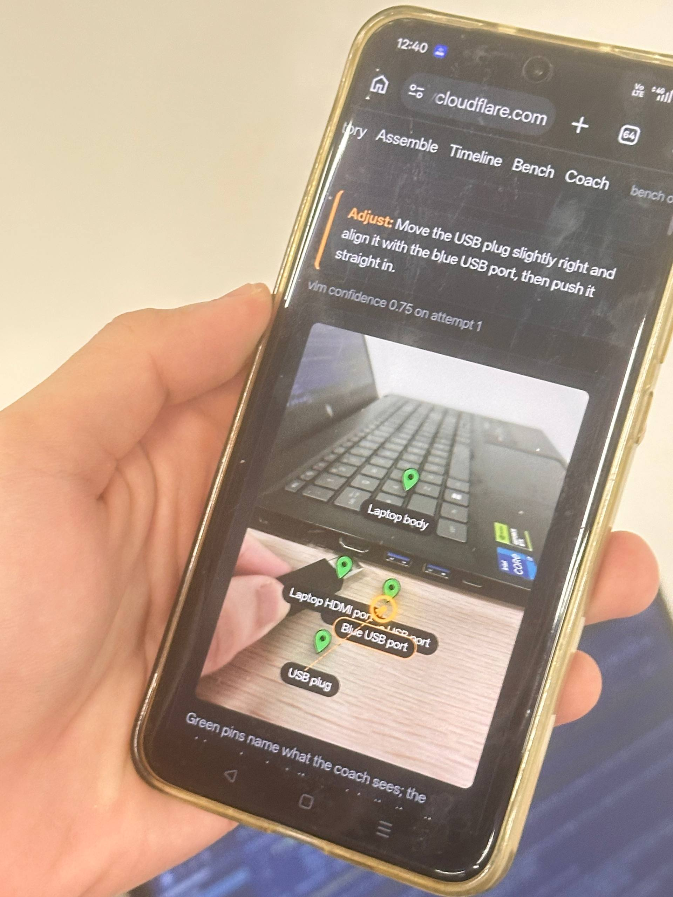

Find a part
Photograph the mess. Search it like a document. Matching parts light up in the live view.
Inventory ↗A camera-native hardware workspace
Forge watches the bench, understands the parts, and stays with you until the circuit works. It is the missing loop between a good idea and a working board.

LIVE COACH ●USB plug → blue USB portVibe coding removed the blank-page problem for software. Forge applies that same generosity to the workbench.
Point. Ask. Place. Test. Every action becomes part of a build that you can understand and return to.

Forge turns a phone camera into a patient hardware partner. It names what is in front of you, points to the exact place to act, and explains what changed when the circuit does not behave.
Each surface answers a real question that appears between “I want to build this” and “it works.”
Photograph the mess. Search it like a document. Matching parts light up in the live view.
Inventory ↗Forge confirms the tip, checks the hole, and tells you how to move when you are off.
Coach ↗Firmware is generated from the pins you actually used. Test it against the attached board.
Bench ↗Working wiring, firmware, photos, and the build journal become a commit you can diff.
Timeline ↗Real camera footage. Real placement. A tiny moment where the interface and the physical world agree.
Open prototype · built by Brennan Ow Yong